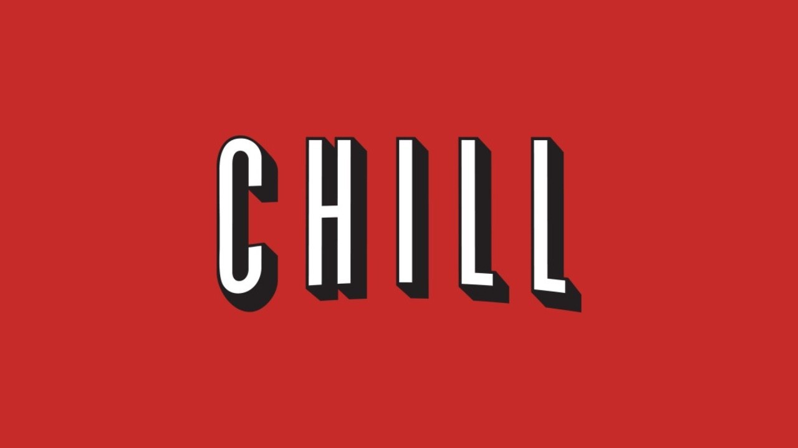
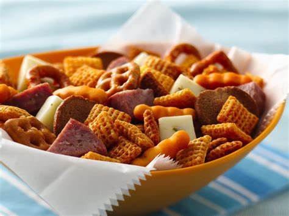

Detalles de la Próxima Actividad
Apertura del proyecto
No hay película hoy, pero la película comienza con nuestra primera gran aventura: el lanzamiento de este increíble proyecto. Prepárate para un viaje que irá más allá de lo esperado.
Actividad

El verdadero juego comienza con nosotros. Hoy nos reunimos para lanzar este desafío juntos, sin cartas ni piezas, solo con grandes ideas y sueños.
Comida Temática

Hoy la comida es simple, pero el banquete de actividades que nos espera lo hace más sabroso. La verdadera fiesta comienza ahora.